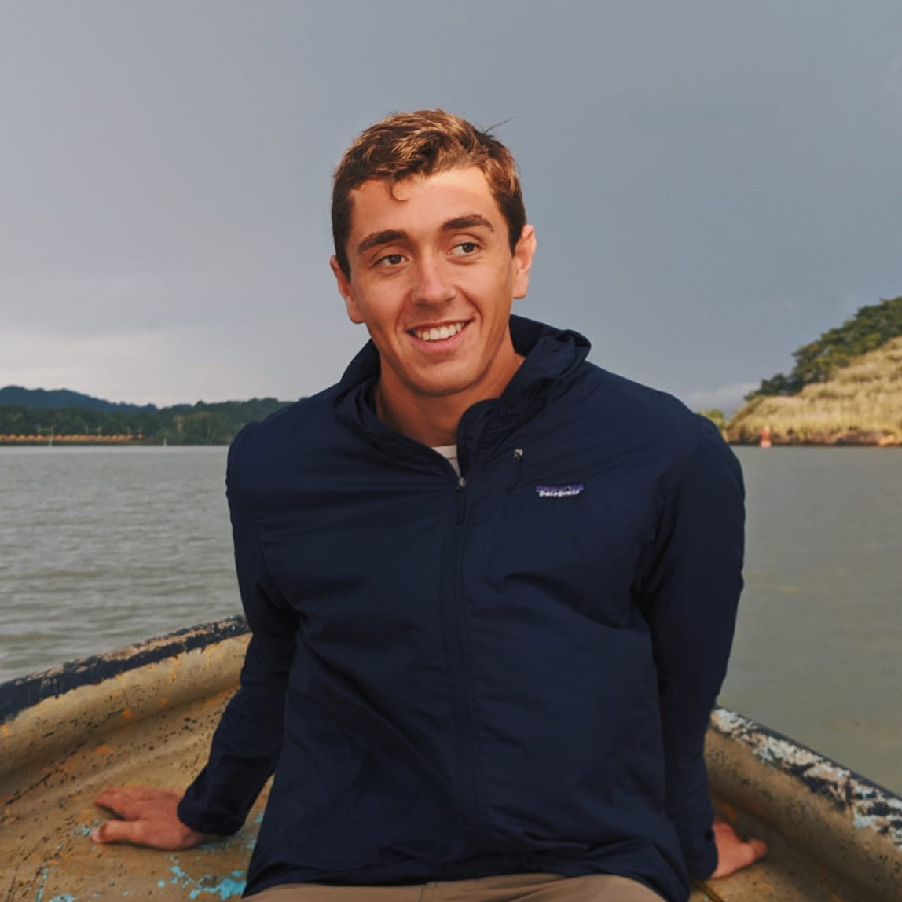

Bio

Hi, my name's Ian!
I'm an entrepreneur and artist based in the San Francisco Bay Area.
I'm currently the Founder & CEO of
Allieae, Inc.,
a software company focused on developing tools for a free and
open Internet. Our primary product is FreePN, the world's
first free, fast, anonymous, unlimited-bandwidth VPN.
Previously, I was the Co-founder & CTO of
Orchard Systems, Inc., a software company that developed an enterprise point-of-sale
and operating system solution for brick & mortar. I
co-founded Orchard in 2015 while attending Dartmouth College,
and helped lead Orchard through a successful acquisition in
early 2019.
Artistically, I'm primarily interested in exploring
computational
and
generative
media. My work is usually visual & digital, though
occassionally I enjoy working on written, musical, and physical
projects. You can see a few of my recent works on the
portfolio page of
this site.
When not working, I pursue a number of passions and hobbies,
including:
- Surfing
- Snowboarding
- Skateboarding (Downhill Longboarding & Vert)
- One-design Sailing
- Scuba Diving (PADI Diver No. 14060G7853)
- Climbing & Bouldering
- Trail Running
- Open-water Swimming
- Enjoying Video Games
- Reading Sci-Fi Novels
- Collecting Sea-glass
You can learn more about me, my work, and my interests by
visiting this site's
about page and its
linked profiles. To get in touch, the easist way is via email:
ianhenrybateman@gmail.com.